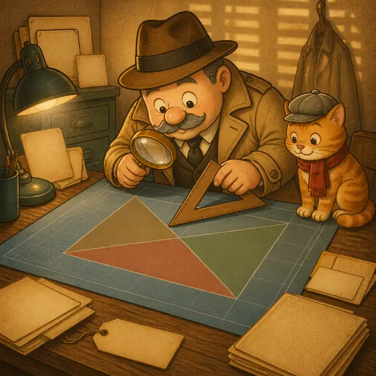
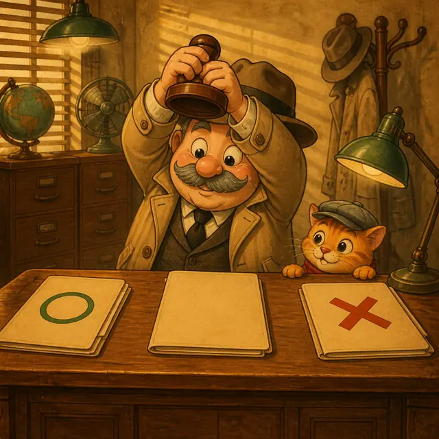

課前暖身漫畫：一瓶汽水的原價是多少？
雜貨店門口貼著一張促銷海報：買 \(2\) 瓶打 \(9\) 折，只比買 \(1\) 瓶多 \(16\) 元。助手看著海報想了半天——海報上從頭到尾沒有寫原價。老偵探把海報揭下來釘上線索板，說了一句話：「不知道的東西，先給它一個代號。」於是原價變成 \(x\)：買 \(2\) 瓶要付 \(2x \times 0.9\)，買 \(1\) 瓶要付 \(x\)，兩者相差 \(16\) 元，線索板上就浮出一條方程式 \(2x \times 0.9 - x = 16\)。整理後 \(0.8x = 16\)，紅線的另一端落在 \(x = 20\)。沒有問店員、沒有翻價目表，一瓶汽水的原價就這樣被推理出來——這一節要學的，就是這套把生活敘述變成方程式的辦案手法。
重點 1：辦案四步驟——設、列、解、答
重點整理與敘述
- 什麼是應用問題：日常生活中不能一眼看出答案的問題。既然看不出來，就用學過的方程式把它解出來。
- 解應用問題的四個步驟：
- 設未知數：依題意假設適當的未知數，連單位一起寫清楚（設每瓶汽水的原價為 \(x\) 元）。
- 列方程式：根據題目找出相等的關係，列出一元一次方程式。
- 解方程式：利用等量公理或移項法則，解出未知數。
- 寫答案：依題意寫出正確答案；若求出的解不符合情境的要求，則此題無解。
- 汽水促銷的完整推理：買 \(2\) 瓶打 \(9\) 折，只比買 \(1\) 瓶多 \(16\) 元。設每瓶原價 \(x\) 元，則 \[\begin{aligned} & 2x \times 0.9 - x = 16 \\ &\qquad 1.8x - x = 16 \\ &\qquad\quad\ \ 0.8x = 16 \\ &\qquad\qquad\ \ x = 20 \end{aligned}\] 所以一瓶汽水的原價為 \(20\) 元。
- 列方程式的關鍵，是找出「同一個量的兩種說法」。汽水題裡那個量是「差額」：一邊是 \(2x \times 0.9 - x\)，另一邊是 \(16\)。兩種說法講的是同一件事，中間就可以畫上等號。
- 未知數要設誰：通常直接設題目問的那個數；但如果設另一個數會比較好列式，也可以先設它，最後再回推成題目要的答案。
- 第四步不是抄 \(x\) 的值：題目問「兩人相差幾歲」，你算出來的卻是「弟弟幾歲」，那還沒答完。永遠回頭看題目最後那個問號。
| 步驟 | 要做的事 | 汽水題的實際內容 |
|---|---|---|
| 1 設未知數 | 取代號、寫單位 | 設每瓶原價 \(x\) 元 |
| 2 列方程式 | 找相等關係 | \(2x \times 0.9 - x = 16\) |
| 3 解方程式 | 等量公理／移項 | \(0.8x = 16\)，得 \(x = 20\) |
| 4 寫答案 | 回答問題並檢查情境 | 一瓶原價 \(20\) 元 |
視覺互動探索：辦案流程線索板
選一樁案件，按下一步把四張卡片依序釘上線索板。紅線串到最後一張，案子就破了：
形成性評量 (辦案四步驟)
Q1. 某飲料店促銷：買 \(3\) 瓶打 \(8\) 折，比買 \(1\) 瓶多付 \(42\) 元。則一瓶的原價是多少元？
解析：答案為 B。設一瓶原價 \(x\) 元。買 \(3\) 瓶打 \(8\) 折要付 \(3x \times 0.8 = 2.4x\) 元，買 \(1\) 瓶要付 \(x\) 元，兩者相差 \(42\) 元：
\[\begin{aligned}
& 3x \times 0.8 - x = 42 \\
&\qquad\ \ 2.4x - x = 42 \\
&\qquad\qquad 1.4x = 42 \\
&\qquad\qquad\ \ \ x = 30
\end{aligned}\]
所以一瓶原價 \(30\) 元。檢驗：買 \(3\) 瓶付 \(90 \times 0.8 = 72\) 元，買 \(1\) 瓶付 \(30\) 元，\(72 - 30 = 42\)，符合。
Q2. 關於用一元一次方程式解應用問題，下列敘述何者錯誤？
解析：答案為 C。方程式解得出來，只代表計算沒錯，不代表符合情境。例如票數算出 \(3.75\) 張、人數算出 \(-2\) 人，計算無誤但與事實不符，這種情況該題無解。
A 正確：\(x\) 是「\(30\) 元」還是「\(30\) 人」差很多，單位必須寫。
B 正確：沒有相等關係就寫不出等號。
D 正確：這正是第四步「寫答案」要一併檢查的事。
重點 2：數字與費用問題——把中文逐句翻成算式
重點整理與敘述
- 翻譯是逐詞進行的，不要整句用猜的。把句子切成一小段一小段，每一段換成一個符號，接起來就是算式。
- 數字問題（例）：已知甲數的 \(3\) 倍加 \(1\) 等於甲數加 \(9\)，求甲數。設甲數為 \(x\)，照句子順序翻譯：「甲數的 \(3\) 倍」是 \(3x\)、「加 \(1\)」是 \(+1\)、「等於」是 \(=\)、「甲數加 \(9\)」是 \(x+9\)，於是 \[\begin{aligned} & 3x + 1 = x + 9 \\ &\quad 3x - x = 9 - 1 \\ &\qquad\ \ 2x = 8 \\ &\qquad\ \ \ x = 4 \end{aligned}\] 甲數為 \(4\)。
- 費用問題（例）：\(1\) 盒蛋比 \(1\) 盒豆腐貴 \(60\) 元，\(1\) 盒蛋和 \(4\) 盒豆腐共付 \(210\) 元，求兩者價錢。設比較基準（比較便宜的豆腐）為 \(x\) 元，蛋就是 \((x+60)\) 元： \[\begin{aligned} & (x+60) + 4x = 210 \\ &\qquad\ \ 5x + 60 = 210 \\ &\qquad\qquad\ 5x = 150 \\ &\qquad\qquad\ \ \ x = 30 \end{aligned}\] 豆腐 \(30\) 元、蛋 \(30+60=90\) 元。
- 兩個量互相比較時，設哪一個都可以：上題設豆腐為 \(x\)，蛋就是 \(x+60\)；反過來設蛋為 \(x\)，豆腐就是 \(x-60\)，列出的方程式是 \(x+4(x-60)=210\)，解出 \(x=90\)，答案完全一樣。兩種設法都對，挑你覺得比較好寫的那一個就好。
- 先看清楚題目給了什麼相等關係：上題給的是「總金額」——每一項的單價 \(\times\) 數量加起來等於實付的錢。但費用問題也可能是別的關係，例如「甲付的錢和乙一樣多」「找回的錢是 \(50\) 元」。等號要從題目那句話來，不是從題型來。
- 問兩個答案就要寫兩個：上題問的是蛋和豆腐各多少錢，只寫 \(x=30\) 只答了一半。
| 中文說法 | 翻成算式 | 中文說法 | 翻成算式 |
|---|---|---|---|
| 甲數的 \(3\) 倍 | \(3x\) | 比 \(x\) 貴 \(60\) | \(x+60\) |
| 加 \(1\)／多 \(1\) | \(+1\) | 比 \(x\) 少 \(4\) | \(x-4\) |
| 減 \(16\)／少 \(16\) | \(-16\) | \(x\) 的一半 | \(\frac{x}{2}\) |
| 等於／是／共 | \(=\) | \(4\) 倍少 \(1\) | \(4x-1\) |
視覺互動探索：敘述翻譯線索卡
按下一段，中文句子會一段一段變亮，下方同步拼出對應的算式。看清楚哪個詞變成哪個符號：
形成性評量 (數字與費用問題)
Q1. 已知乙數減 \(12\) 等於乙數的 \(5\) 倍加 \(4\)，則乙數是多少？
解析：答案為 A。設乙數為 \(x\)。「乙數減 \(12\)」是 \(x-12\)，「乙數的 \(5\) 倍加 \(4\)」是 \(5x+4\)：
\[\begin{aligned}
& x - 12 = 5x + 4 \\
&\quad x - 5x = 4 + 12 \\
&\qquad\ -4x = 16 \\
&\qquad\quad x = -4
\end{aligned}\]
所以乙數為 \(-4\)。檢驗：左邊 \(-4-12=-16\)，右邊 \(5 \times (-4)+4=-16\)，兩邊相等。
Q2. 一支筆比一本筆記本便宜 \(25\) 元，買 \(3\) 支筆和 \(2\) 本筆記本共付 \(275\) 元，則一本筆記本多少元？
解析：答案為 B。筆比筆記本便宜，所以設比較基準（筆記本）為 \(x\) 元，一支筆就是 \((x-25)\) 元：
\[\begin{aligned}
& 3(x-25) + 2x = 275 \\
&\quad 3x - 75 + 2x = 275 \\
&\qquad\qquad\ \ 5x = 350 \\
&\qquad\qquad\ \ \ x = 70
\end{aligned}\]
一本筆記本 \(70\) 元（一支筆 \(45\) 元）。檢驗：
\[\begin{aligned}
& 3 \times 45 + 2 \times 70 \\
&= 135 + 140 = 275
\end{aligned}\]
符合。
重點 3：分配問題——同一個總數，兩種算法
重點整理與敘述
- 怎麼認出分配問題：同一批東西被分了兩次，一次多出幾個、另一次不足幾個（或剛好分完）。
- 解法只有一句話：把總數用兩種分法各表示一次，因為講的是同一批東西，兩個式子就相等。
- 多出就加、不足就減：
- 每班 \(25\) 人多出 \(10\) 人 → 排完 \(25x\) 人之後還剩 \(10\) 人，總數 \(=25x+10\)。
- 每班 \(27\) 人不足 \(20\) 人 → 要排滿 \(27x\) 人還差 \(20\) 人，總數 \(=27x-20\)。
- 編班例：班級數固定，每班 \(25\) 人多出 \(10\) 人，每班 \(27\) 人不足 \(20\) 人，求班級數。設班級數為 \(x\) 班，兩種算法算的都是新生人數： \[\begin{aligned} & 25x + 10 = 27x - 20 \\ &\quad 10 + 20 = 27x - 25x \\ &\qquad\quad\ 30 = 2x \\ &\qquad\qquad x = 15 \end{aligned}\] 班級數為 \(15\) 班。
- 糖果例（總數不變）：一包糖果平分給全班，每人 \(7\) 顆多出 \(4\) 顆；再加 \(44\) 顆後每人 \(9\) 顆恰好分完。設全班 \(x\) 人，原本的糖果數有兩種寫法：\(7x+4\)，以及 \(9x-44\)（每人 \(9\) 顆共 \(9x\) 顆，其中 \(44\) 顆是後來加的）。故 \(7x+4=9x-44\)，得 \(x=24\) 人。
- \(x\) 設「份數」通常最好寫：分配問題裡兩個式子都是「每份幾個 \(\times\) 份數」，所以設份數（班級數、學生數、袋數）當 \(x\)，兩邊都很容易寫出來。但 \(x\) 不一定要是題目問的那個數——若改設總數為 \(x\)，糖果題就變成 \(\frac{x-4}{7}=\frac{x+44}{9}\)，一樣解得出來，只是式子難寫一點。
| 份數 | 分法 | 結果 | 總數怎麼寫 |
|---|---|---|---|
| \(x\) 份 | 每份 \(a\) 個 | 多出 \(m\) 個 | \(ax+m\) |
| \(x\) 份 | 每份 \(b\) 個 | 不足 \(n\) 個 | \(bx-n\) |
| \(x\) 份 | 每份 \(c\) 個 | 恰好分完 | \(cx\) |
視覺互動探索：兩種分法盤點台
拉滑桿改變份數，兩條長條分別是兩種分法算出的總數。只有一個份數能讓兩條一樣長，那就是答案：
形成性評量 (分配問題)
Q1. 把一批餅乾分裝成數袋，每袋裝 \(8\) 片會多出 \(5\) 片，每袋裝 \(9\) 片則不足 \(7\) 片。則共有幾袋？
解析：答案為 C。設共有 \(x\) 袋。每袋 \(8\) 片多出 \(5\) 片，餅乾共 \((8x+5)\) 片；每袋 \(9\) 片不足 \(7\) 片，餅乾共 \((9x-7)\) 片。兩者都是同一批餅乾：
\[\begin{aligned}
& 8x + 5 = 9x - 7 \\
&\quad 5 + 7 = 9x - 8x \\
&\qquad\ \ 12 = x
\end{aligned}\]
共 \(12\) 袋。檢驗：\(8 \times 12+5=101\)，\(9 \times 12-7=101\)，餅乾共 \(101\) 片，兩種分法一致。
Q2. 某活動原本安排每組 \(7\) 人，會多出 \(3\) 人；後來多開 \(2\) 組並改為每組 \(6\) 人，恰好分完。則原本安排幾組？
解析：答案為 B。設原本安排 \(x\) 組。第一種分法：每組 \(7\) 人多出 \(3\) 人，總人數 \(=7x+3\)；第二種分法：組數變成 \((x+2)\) 組、每組 \(6\) 人且恰好分完，總人數 \(=6(x+2)\)。兩次分的是同一批人：
\[\begin{aligned}
& 7x + 3 = 6(x+2) \\
&\quad 7x + 3 = 6x + 12 \\
&\quad 7x - 6x = 12 - 3 \\
&\qquad\qquad x = 9
\end{aligned}\]
原本安排 \(9\) 組。檢驗：總人數 \(7 \times 9+3=66\)；改成 \(11\) 組每組 \(6\) 人，\(6 \times 11=66\)，恰好分完。
重點 4：折扣問題——把每一句話串成一條關係鏈
重點整理與敘述
- 打幾折就乘以零點幾：打 \(9\) 折是 \(\times 0.9\)、打 \(8\) 折是 \(\times 0.8\)、打 \(75\) 折是 \(\times 0.75\)。折後價 \(=\) 原售價 \(\times\) 折數。
- 省下的錢 \(=\) 原售價 \(\times (1 -\) 折數\()\)：打 \(8\) 折省下 \(0.2\) 倍的原售價，打 \(75\) 折省下 \(0.25\) 倍。
- 折扣問題通常是一條關係鏈，把每一句話各翻成一個等式，再串起來：
- 「原售價比預算多 \(1500\) 元」→ 原售價 \(=x+1500\)
- 「變成 \(8\) 折出售」→ 新售價 \(=(x+1500) \times 0.8\)
- 「新售價比預算少 \(200\) 元」→ 新售價 \(=x-200\)
- 籃球鞋例：設阿樂的預算為 \(x\) 元，由上面三句可列出 \[\begin{aligned} & (x+1500) \times 0.8 = x - 200 \\ &\qquad\ \ 0.8x + 1200 = x - 200 \\ &\qquad\qquad\quad\ 1400 = 0.2x \\ &\qquad\qquad\qquad\ \ x = 7000 \end{aligned}\] 阿樂的預算是 \(7000\) 元。
- 「比⋯⋯多／少」一定要看清楚是誰比誰：「原售價比預算多 \(1500\)」是原售價比較大，所以原售價 \(=\) 預算 \(+1500\)；寫成預算 \(=\) 原售價 \(+1500\) 就完全相反了。
- 算完務必用原句檢驗：把 \(x=7000\) 代回去，原售價 \(8500\)、\(8\) 折後 \(6800\)，比預算 \(7000\) 少 \(200\)，三句話全部對上才算完成。
| 中文 | 算式 | 常見的相反寫法 |
|---|---|---|
| 打 \(8\) 折 | \(\times 0.8\) | \(\times 8\) |
| 打 \(75\) 折 | \(\times 0.75\) | \(\times 7.5\) |
| \(A\) 比 \(B\) 多 \(k\) | \(A=B+k\) | \(B=A+k\) |
| \(A\) 比 \(B\) 少 \(k\) | \(A=B-k\) | \(A=k-B\) |
視覺互動探索：價目吊牌推演器
拉滑桿假設一個預算，三張吊牌會自動算出原售價與折後價。當折後價正好落在「預算 \(-\) 差額」那條線上，就是正確的預算：
形成性評量 (折扣問題)
Q1. 一件外套打 \(7\) 折後，比原售價便宜了 \(450\) 元。則這件外套的原售價是多少元？
解析：答案為 B。設原售價為 \(x\) 元，打 \(7\) 折後為 \(0.7x\) 元，它比原售價少 \(450\) 元：
\[\begin{aligned}
& 0.7x = x - 450 \\
&\quad\ 450 = x - 0.7x \\
&\quad\ 450 = 0.3x \\
&\qquad x = 1500
\end{aligned}\]
原售價 \(1500\) 元。另一個想法：打 \(7\) 折省下的正是原售價的 \(1-0.7=0.3\) 倍，所以 \(0.3x=450\)，同樣得 \(x=1500\)。
Q2. 一個書包打 \(8\) 折後的價錢，恰好比原售價的一半多 \(90\) 元。則這個書包的原售價是多少元？
解析：答案為 B。設原售價為 \(x\) 元。打 \(8\) 折後是 \(0.8x\) 元，原售價的一半是 \(0.5x\) 元，「多 \(90\) 元」表示 \(0.8x\) 比 \(0.5x\) 大 \(90\)：
\[\begin{aligned}
& 0.8x = 0.5x + 90 \\
&\quad 0.8x - 0.5x = 90 \\
&\qquad\qquad 0.3x = 90 \\
&\qquad\qquad\ \ \ x = 300
\end{aligned}\]
原售價 \(300\) 元。檢驗：\(8\) 折後 \(240\) 元，原售價的一半是 \(150\) 元，\(240-150=90\)，符合。
重點 5：圖形問題——同一塊面積，算兩次
重點整理與敘述
- 會用到的三個公式：長方形面積 \(=\) 長 \(\times\) 寬；三角形面積 \(=\frac{1}{2} \times\) 底 \(\times\) 高；梯形面積 \(=\frac{(\text{上底}+\text{下底}) \times \text{高}}{2}\)。
- 圖形問題的相等關係，通常是「同一塊面積用兩種方式算」：一次用整體公式，一次把它拆成好幾塊加起來，兩個結果必須相等。
- 邊長由幾段組成時，先寫成和：\(\overline{AC}=\overline{AB}+\overline{BC}\)。設 \(\overline{BC}=x\)、已知 \(\overline{AB}=5\)，就得到 \(\overline{AC}=5+x\)。
- 課本例：長方形 \(ACEF\) 中 \(\overline{AF}=8\)、\(\overline{AB}=5\)、\(\overline{BC}=x\)、\(\overline{CD}=4\)、\(\overline{DE}=4\)，已知 \(\triangle BDF\) 面積為 \(18\)。整體面積 \(=8 \times (5+x)\)，拆開來是四塊三角形的和： \[\begin{aligned} & 8(5+x) \\ &= \tfrac{1}{2} \cdot 8 \cdot 5 + \tfrac{1}{2} \cdot x \cdot 4 \\ &\quad + \tfrac{1}{2} \cdot 4 \cdot (5+x) + 18 \\ & 40 + 8x \\ &= 20 + 2x + 10 + 2x + 18 \\ & 8x - 4x = 48 - 40 \\ &\qquad\ \ 4x = 8 \\ &\qquad\quad x = 2 \end{aligned}\] 所以 \(\overline{BC}\) 的長度為 \(2\)。
- 梯形例：下底比上底的 \(3\) 倍少 \(4\) 公分，高 \(7\) 公分，面積 \(70\) 平方公分。設上底 \(x\) 公分，下底 \((3x-4)\) 公分：\(\frac{x+(3x-4)}{2} \times 7=70\)，得 \((2x-2) \times 7=70\)，\(14x-14=70\)，\(x=6\)。上底 \(6\) 公分。
- 算出來的長度不能是負的或零：如果解出 \(x=-3\)，代表題目給的條件湊不出這個圖形，該題無解。
| 圖形 | 面積公式 | 題目若說 | 就可以這樣設 |
|---|---|---|---|
| 長方形 | 長 \(\times\) 寬 | 長比寬多 \(6\) | 設寬為 \(x\)，長為 \(x+6\) |
| 三角形 | \(\frac{1}{2} \times\) 底 \(\times\) 高 | 高是底的 \(2\) 倍 | 設底為 \(x\)，高為 \(2x\) |
| 梯形 | \(\frac{(\text{上底}+\text{下底}) \times \text{高}}{2}\) | 下底比上底的 \(3\) 倍少 \(4\) | 設上底為 \(x\)，下底為 \(3x-4\) |

視覺互動探索：藍圖面積比對台
拉滑桿改變 \(\overline{BC}\) 的長度。左邊是整塊長方形的面積，右邊是拆成四塊相加的面積。兩邊相等的那一刻，\(x\) 就找到了：
形成性評量 (圖形問題)
Q1. 一個梯形的上底比下底少 \(5\) 公分，高為 \(8\) 公分，面積為 \(60\) 平方公分，則下底為多少公分？
解析：答案為 C。題目問下底，就設下底為 \(x\) 公分，則上底為 \((x-5)\) 公分：
\[\begin{aligned}
& \frac{(x-5)+x}{2} \times 8 = 60 \\
&\qquad (2x-5) \times 4 = 60 \\
&\qquad\qquad 2x - 5 = 15 \\
&\qquad\qquad\qquad x = 10
\end{aligned}\]
下底 \(10\) 公分（上底 \(5\) 公分）。檢驗：\(\frac{(5+10) \times 8}{2}=60\)，符合。
Q2. 一個長方形的長比寬多 \(6\) 公分，周長為 \(44\) 公分，則寬為多少公分？
解析：答案為 B。長比寬多，所以設較小的寬為 \(x\) 公分，長為 \((x+6)\) 公分。長方形周長 \(=\) （長 \(+\) 寬） \(\times 2\)：
\[\begin{aligned}
& \big[x + (x+6)\big] \times 2 = 44 \\
&\qquad\quad (2x+6) \times 2 = 44 \\
&\qquad\qquad\ \ 4x + 12 = 44 \\
&\qquad\qquad\qquad\ \ 4x = 32 \\
&\qquad\qquad\qquad\quad x = 8
\end{aligned}\]
寬為 \(8\) 公分（長為 \(14\) 公分）。檢驗：\((8+14) \times 2=44\)，符合。
重點 6：年齡問題——大家一起變老，年齡差永遠不變
重點整理與敘述
- 兩個一定要記住的事實：
- 每過 \(n\) 年，每個人都增加 \(n\) 歲——不是只有小孩變大，媽媽也一起加 \(n\)。
- 兩人的年齡差永遠不變——今年差 \(30\) 歲，\(10\) 年後、\(5\) 年前都還是差 \(30\) 歲。
- 列表法最不容易出錯：畫一張表，「今年」一欄、「\(n\) 年後（或前）」一欄，把每個人各填一格再列式。
- 年齡和的例子：今年小妍和媽媽年齡和是 \(56\) 歲，\(7\) 年後媽媽的年齡是小妍的 \(2\) 倍多 \(10\) 歲，求兩人相差幾歲。設小妍今年 \(x\) 歲，媽媽今年 \((56-x)\) 歲： \[\begin{aligned} & (56-x) + 7 = 2(x+7) + 10 \\ &\qquad\ \ 63 - x = 2x + 24 \\ &\qquad\qquad\ 39 = 3x \\ &\qquad\qquad\ \ x = 13 \end{aligned}\] 小妍 \(13\) 歲、媽媽 \(56-13=43\) 歲，相差 \(30\) 歲。
- 年齡差的例子：小翔與爸爸相差 \(35\) 歲，\(5\) 年前爸爸的年齡恰好是小翔的 \(8\) 倍。設小翔今年 \(x\) 歲，爸爸 \((x+35)\) 歲，\(5\) 年前兩人各減 \(5\)：\((x+35)-5=8(x-5)\)，得 \(x+30=8x-40\)，\(-7x=-70\)，\(x=10\)。小翔今年 \(10\) 歲。
- 最常見的錯誤：\(7\) 年後只把小孩加了 \(7\)，卻忘了媽媽也要加 \(7\)。時間對每個人都一樣公平。
- 注意題目問的是誰：上面第一題問的是「相差多少歲」，算出 \(x=13\) 只是中途站，還要再算媽媽的年齡並相減。
| 人物 | 今年 | \(7\) 年後 |
|---|---|---|
| 小妍 | \(x\) | \(x+7\) |
| 媽媽 | \(56-x\) | \((56-x)+7\) |
| 年齡差 | \(56-2x\) | \(56-2x\)（不變） |
視覺互動探索：年齡時間軸
拉滑桿假設小妍今年的年齡，兩條年齡棒會一起往前推 \(7\) 年。只有一個假設能讓「媽媽」正好等於「小妍的 \(2\) 倍多 \(10\)」：
形成性評量 (年齡問題)
Q1. 今年姊姊比弟弟大 \(14\) 歲，\(2\) 年後姊姊的年齡恰好是弟弟的 \(3\) 倍。則弟弟今年幾歲？
解析：答案為 B。設弟弟今年 \(x\) 歲，則姊姊今年 \((x+14)\) 歲。\(2\) 年後兩人都要加 \(2\)：弟弟 \((x+2)\) 歲、姊姊 \((x+16)\) 歲。
\[\begin{aligned}
& x + 16 = 3(x+2) \\
&\quad x + 16 = 3x + 6 \\
&\quad 16 - 6 = 3x - x \\
&\qquad\ \ 10 = 2x \\
&\qquad\quad x = 5
\end{aligned}\]
弟弟今年 \(5\) 歲（姊姊 \(19\) 歲）。檢驗：\(2\) 年後弟弟 \(7\) 歲、姊姊 \(21\) 歲，\(21=3 \times 7\)，符合。
Q2. 今年父子兩人的年齡和是 \(60\) 歲，\(6\) 年後父親的年齡恰好是兒子的 \(3\) 倍。則兒子今年幾歲？
解析：答案為 B。設兒子今年 \(x\) 歲，由年齡和可知父親今年 \((60-x)\) 歲。\(6\) 年後兒子 \((x+6)\) 歲、父親 \((60-x)+6=(66-x)\) 歲：
\[\begin{aligned}
& 66 - x = 3(x+6) \\
&\quad 66 - x = 3x + 18 \\
&\quad 66 - 18 = 3x + x \\
&\qquad\ \ 48 = 4x \\
&\qquad\quad x = 12
\end{aligned}\]
兒子今年 \(12\) 歲（父親 \(48\) 歲）。檢驗：\(6\) 年後兒子 \(18\) 歲、父親 \(54\) 歲，\(54=3 \times 18\)，符合。
重點 7：速率問題——先問「哪一個是一樣的」
重點整理與敘述
- 速率三式：距離 \(=\) 速率 \(\times\) 時間、時間 \(=\) 距離 \(\div\) 速率、速率 \(=\) 距離 \(\div\) 時間。三個式子是同一件事，看題目要什麼就用哪一個。
- 時間、速率、距離問題常見情況：「時間相同」或「距離相同」。動筆之前先把這一句問完——什麼相同決定了整條方程式，這一步錯了後面全白算。
- 時間相同（誰先到終點）：小翊時速 \(10\) 公里、小妍時速 \(8\) 公里，小翊跑回終點時小妍還離終點 \(7.4\) 公里，求全長。設全長 \(x\) 公里，兩人同時出發、同時停錶，所以時間一樣： \[\begin{aligned} & \frac{x}{10} = \frac{x-7.4}{8} \\ &\qquad 8x = 10x - 74 \\ &\qquad 2x = 74 \\ &\qquad\ \ x = 37 \end{aligned}\] 環島公路全長 \(37\) 公里。誰跑得快，誰的距離就是 \(x\)；跑得慢的那個是 \(x\) 減掉還差的那一段。
- 距離相同（來回同一條路）：上山時速 \(3\) 公里、下山時速 \(4\) 公里，來回共 \(2\) 小時。設山路長 \(x\) 公里，上山花 \(\frac{x}{3}\) 小時、下山花 \(\frac{x}{4}\) 小時： \[\begin{aligned} & \frac{x}{3}+\frac{x}{4}=2 \\ &\qquad 4x+3x=24 \\ &\qquad\quad\ \ x=\frac{24}{7} \end{aligned}\] 山路長 \(\frac{24}{7}\) 公里。兩邊同乘 \(12\)（分母的最小公倍數）就把分數清掉了。
- 最常見的陷阱：來回的平均速率不是把兩個速率平均。上面這題若誤以為平均時速是 \(\frac{3+4}{2}=3.5\)，會算出單程 \(3.5 \times 2 \div 2 = 3.5\) 公里，和正確的 \(\frac{24}{7} \approx 3.43\) 不一樣。走得慢的那一段花的時間比較長，權重不相等，不能直接平均。
- 單位要先統一：題目混用「公尺／分」與「公里／時」時，先換算成同一組再列式。\(1\) 公里 \(=1000\) 公尺、\(1\) 小時 \(=60\) 分。
- 算完一定要回頭檢驗：把 \(x\) 代回去算出兩邊的時間（或距離），看是不是真的相等。速率問題的算式常有分數，檢驗一次最划算。
| 題目情境 | 什麼是一樣的 | 等號怎麼列 |
|---|---|---|
| 同時出發，誰先到終點 | 時間相同 | \(\dfrac{\text{甲的距離}}{\text{甲的速率}} = \dfrac{\text{乙的距離}}{\text{乙的速率}}\) |
| 同一條路來回一趟 | 距離相同 | \(\dfrac{x}{v_{\text{去}}} + \dfrac{x}{v_{\text{回}}} = \text{總時間}\) |
| 兩人相向而行，途中相遇 | 時間相同 | 兩人走的距離加起來等於全長 |
| 同向追趕，後者追上前者 | 距離相同 | 追上時兩人走的距離相等 |
視覺互動探索：速率關係追蹤圖
切換兩種情境，看清楚等號到底是從哪一個「相同」來的。拉動滑桿時，方程式與答案會跟著重算：
形成性評量 (速率問題)
Q1. 甲、乙兩人同時從同一地點出發，沿同一條路走到終點。甲每分鐘走 \(60\) 公尺，乙每分鐘走 \(80\) 公尺。當乙走到終點時，甲還離終點 \(100\) 公尺。則這條路全長多少公尺？
解析：答案為 B。設全長 \(x\) 公尺。乙走了 \(x\) 公尺，甲走了 \((x-100)\) 公尺，兩人所花的時間相同：
\[\begin{aligned}
& \frac{x}{80} = \frac{x-100}{60} \\
&\qquad 60x = 80x - 8000 \\
&\qquad 20x = 8000 \\
&\qquad\ \ \ x = 400
\end{aligned}\]
全長 \(400\) 公尺。檢驗：乙走 \(400 \div 80=5\) 分鐘，甲同樣 \(5\) 分鐘走了 \(60 \times 5=300\) 公尺，離終點正好 \(100\) 公尺。
Q2. 小翊騎腳踏車走一條山路，上坡時速 \(8\) 公里、下坡時速 \(12\) 公里。他沿同一條路來回一趟共花 \(1\) 小時，則這條山路單程長多少公里？
解析：答案為 A。來回走的是同一條路，所以單程距離相同；設單程 \(x\) 公里，兩段的時間加起來是 \(1\) 小時：
\[\begin{aligned}
& \frac{x}{8} + \frac{x}{12} = 1 \\
&\qquad\quad 3x + 2x = 24 \\
&\qquad\qquad\ \ 5x = 24 \\
&\qquad\qquad\quad x = 4.8
\end{aligned}\]
兩邊同乘 \(24\)（\(8\) 與 \(12\) 的最小公倍數）就把分母清掉了。
檢驗：上坡 \(4.8 \div 8 = 0.6\) 小時、下坡 \(4.8 \div 12 = 0.4\) 小時，合計正好 \(1\) 小時。
B 是最常見的錯誤——把上下坡的時速直接平均成 \(\frac{8+12}{2}=10\)，再算 \(10 \times 1 \div 2 = 5\)。但上坡花的時間比下坡長（\(0.6\) 比 \(0.4\)），兩段的權重不一樣，不能直接平均。
C 是把來回總長當成單程；D 是把單程再除以 \(2\)。
重點 8：結案前的最後一步——這個答案合理嗎？
重點整理與敘述
- 方程式算對，不代表答案成立。前面六個重點練的是「怎麼算出 \(x\)」，這個重點練的是算出來之後還要做什麼——把 \(x\) 放回原本的情境，看它在現實裡站不站得住。
- 哪些數一定是正整數：張數、人數、個數、枚數、袋數、杯數、班級數。哪些數不能是負的：長度、面積、年齡、金額。算出來不符合，就表示題目給的情境本身有問題，而不是你算錯。
- 不合理的兩種樣子：
- 該是整數卻不是——游泳池的例子：一張全票 \(120\) 元，比一張優待票貴 \(40\) 元（優待票 \(80\) 元）。買 \(4\) 張全票和若干張優待票，付 \(780\) 元是否合理？設買了 \(x\) 張優待票：\(120 \times 4+80x=780\)，\(480+80x=780\)，\(80x=300\)，\(x=3.75\)。票的張數一定是正整數，雖然計算無誤但與事實不符，所以付費 \(780\) 元不合理。
- 該是正的卻是負的——若求「幾年後」而算出 \(x=-6\)，那代表事情發生在 \(6\) 年前，並不是題目問的「幾年後」。這時要說不合題意，不能直接把負號拿掉當答案。
- 「無解」有兩種樣子：一種是方程式本身解不出來；另一種是解得出來但不符合情境——在應用問題裡，後者才是常客。
- 分數不一定就是錯的：\(x=\frac{24}{7}\) 若問的是山路長度，那完全合理——長度本來就可以是分數。要看問的是什麼東西，不是看數字漂不漂亮。
- 寫答案時要回答題目問的那一句：算出 \(x\) 之後，先看一眼題目最後問的是 \(x\) 本身、還是要再算一步（例如問「相差幾歲」「共幾組」）。這一步和合理性檢查一起做，結案才算完整。
| 算出來的解 | 問的是什麼 | 合理嗎 |
|---|---|---|
| \(x=3.75\) | 票的張數 | 不合理（不是整數） |
| \(x=-2\) | 人數 | 不合理（不能是負的） |
| \(x=-6\) | 幾年後 | 不合理（那是 \(6\) 年前） |
| \(x=\frac{24}{7}\) | 山路長度 | 合理（長度可以是分數） |
| \(x=12\) | 袋數 | 合理 |

視覺互動探索：結案審查台
每樁案件的方程式都已經算完而且沒有算錯。你的工作是看那個解在現實裡站不站得住，再決定蓋哪一個章：
形成性評量 (解與情境的合理性)
Q1. 一盒餅乾 \(150\) 元、一杯飲料 \(45\) 元。小明買了 \(2\) 盒餅乾和若干杯飲料，店員跟他收 \(412\) 元。下列判斷何者正確？
解析：答案為 C。設買了 \(x\) 杯飲料：
\[\begin{aligned}
& 150 \times 2 + 45x = 412 \\
&\qquad\quad 300 + 45x = 412 \\
&\qquad\qquad\quad 45x = 112 \\
&\qquad\qquad\qquad\ x = \frac{112}{45}
\end{aligned}\]
計算完全正確，但飲料的杯數一定是正整數，\(\frac{112}{45}\) 不是整數，與事實不符，所以收費 \(412\) 元不合理。
A、B 錯：\(2\) 杯是 \(390\) 元、\(3\) 杯是 \(435\) 元，都不是 \(412\) 元。
D 錯：\(2\) 盒餅乾 \(300\) 元，\(412\) 元付得起，問題不在這裡。
Q2. 姐姐今年 \(15\) 歲、弟弟今年 \(9\) 歲。若干年後，姐姐的年齡恰好是弟弟的 \(3\) 倍。下列判斷何者正確？
解析：答案為 C。設 \(x\) 年後，屆時姐姐 \((15+x)\) 歲、弟弟 \((9+x)\) 歲：
\[\begin{aligned}
& 15 + x = 3(9 + x) \\
&\quad 15 + x = 27 + 3x \\
&\qquad -2x = 12 \\
&\qquad\ \ \ x = -6
\end{aligned}\]
計算沒有錯，但題目問的是「幾年後」，\(x\) 應該是正數；算出 \(x=-6\) 表示那件事發生在 \(6\) 年前，不合題意。
D 錯得很微妙——姐姐確實曾經是弟弟的 \(3\) 倍：\(6\) 年前姐姐 \(9\) 歲、弟弟 \(3\) 歲，正好 \(3\) 倍。只是那是過去，不是未來。
A 錯在把負號直接丟掉；\(6\) 年後姐姐 \(21\) 歲、弟弟 \(15\) 歲，\(21 \neq 45\)。
B 錯：\(3\) 年後姐姐 \(18\) 歲、弟弟 \(12\) 歲，也不是 \(3\) 倍。
年齡差永遠不變（這裡固定差 \(6\) 歲），倍數關係只會隨時間越來越接近 \(1\) 倍，所以「\(3\) 倍」這件事只可能發生在過去。
小節總結與核心回顧
應用問題結案手冊
- 四步驟：設未知數（含單位）→ 列方程式（找相等關係）→ 解方程式 → 寫答案（並檢查情境）。
- 數字問題：逐詞翻譯。「的 \(a\) 倍」\(\to \times a\)、「多／加」\(\to +\)、「少／減」\(\to -\)、「是／共／等於」\(\to =\)。
- 費用問題：先讀出題目給的是哪一個相等關係（常見是總金額，但不一定）。兩個量互相比較時，設誰當 \(x\) 都可以，另一個用 \(x\) 表示出來即可。
- 分配問題：把總數用兩種分法各寫一次再相等。多出就 \(+\)、不足就 \(-\)。
- 折扣問題：打 \(a\) 折 \(=\times 0.a\)。把每一句翻成一個等式串成關係鏈；「\(A\) 比 \(B\) 多 \(k\)」是 \(A=B+k\)。
- 圖形問題：同一塊面積整體算一次、拆開算一次；邊長由幾段組成時先寫成和。
- 年齡問題：每個人都加 \(n\)、年齡差永遠不變。用「今年／\(n\) 年後」的表格列式。
- 速率問題：時間 \(=\) 距離 \(\div\) 速率。相等關係通常是時間相同或距離相同。
- 合理性：張數、人數、個數、枚數一定是正整數；長度、年齡不能是負數。算出 \(3.75\) 張票就是此題無解。
- 三個最常見的失分點：一、算完沒回答問題（問「相差幾歲」卻只寫 \(x=13\)）；二、「誰比誰多」寫反；三、年齡題只讓一個人變老。
回到事務所：那瓶沒有標價的汽水
為什麼要先給它一個代號
漫畫裡的海報只寫「買 \(2\) 瓶打 \(9\) 折，只比買 \(1\) 瓶多 \(16\) 元」，原價從頭到尾沒出現。一般人到這裡就卡住了，因為不知道的東西沒辦法拿來計算。老偵探做的第一件事，是把那個不知道的數先當成已經知道，給它一個代號 \(x\)——這一步看起來像作弊，卻是整套方法的關鍵：一旦它有了名字，就可以跟其他數字一起被加、被乘、被寫進式子裡。
接下來只要找到一句同時說到兩件事的話：「\(2\) 瓶的九折價」和「\(1\) 瓶的價錢」差了 \(16\) 元。左邊 \(2x \times 0.9\)、右邊 \(x\)，差是 \(16\)——方程式就成立了。列方程式不是靈感，是找出那句把兩個量綁在一起的話。
為什麼還要多一步核對
課本第 \(211\) 頁那題很值得記住：買 \(4\) 張全票和若干張優待票付 \(780\) 元，方程式解出 \(x=3.75\)。計算一個步驟都沒錯，但票不能買 \(0.75\) 張。這時正確的結論不是「答案是 \(3.75\) 張」，而是「付費 \(780\) 元不合理」。數學能保證你算得對，但只有你自己能判斷答案在現實裡站不站得住——這一步永遠不能交給計算。
這套方法有多老
把未知數取個名字再列式，這個想法比代數符號本身還要老。九世紀的數學家花拉子米寫了一本《還原與對消的計算》，書名裡的「還原」（al-jabr）後來變成英文的 algebra（代數）；他處理的正是這一節的問題——把生活裡的分家產、量土地寫成等式再解開。更早的中國《九章算術》第七章〈盈不足〉，整章談的就是我們今天叫「分配問題」的那一類：盈就是多出、不足就是不夠，一千八百年前的書名，跟你今天寫的 \(25x+10=27x-20\) 講的是同一件事。